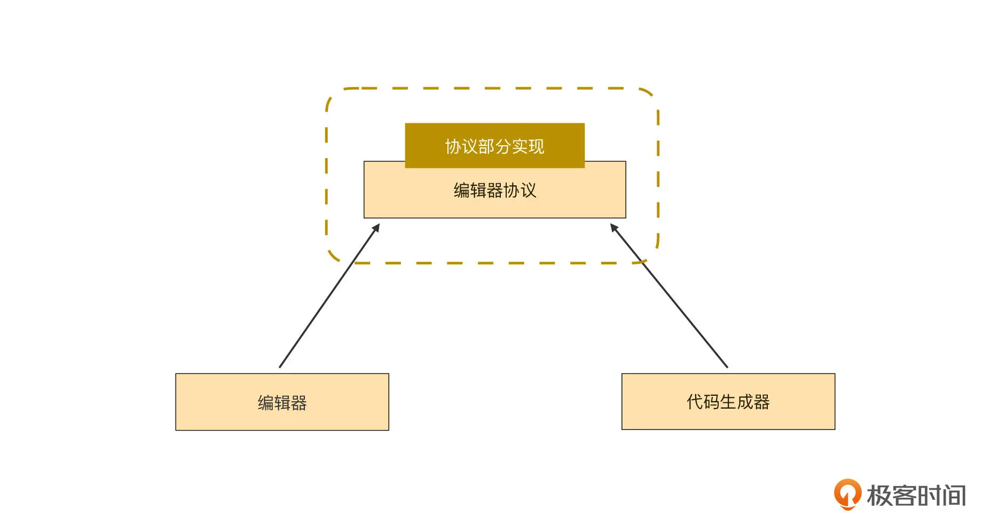
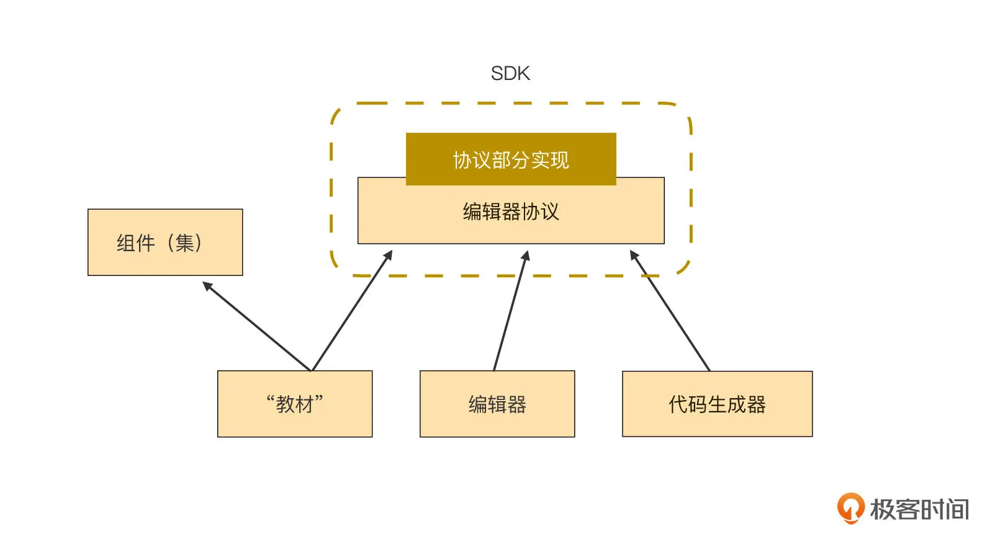
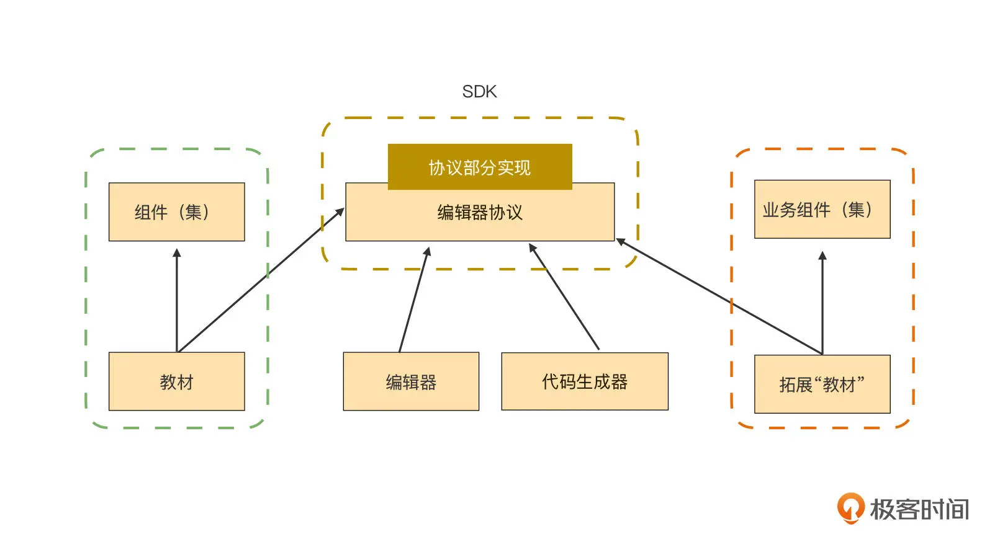

- 00 开篇词｜抛开争论，先来看看真正的低代码.md
- 01｜低代码平台到底是什么样的？.md
- 02｜低代码到底是银弹，还是行业毒瘤？.md
- 03｜低代码的天花板：一个完备的低代码平台应该具备哪些条件？.md
- 04｜演进策略：先发展通用能力还是先满足业务需求？.md
- 05｜基础设施 ：启动低代码平台研发之前，你需要有什么家底？.md
- 06｜踏出新手村便遭遇大Boss：如何架构低代码的引擎？.md
- 07｜结构化代码生成法：代码如何生成代码？.md
- 08｜布局编辑器：如何做到鱼和熊掌兼得？.md
- 09｜属性编辑器：如何解除Web组件属性与编辑器的耦合？.md
- 10 可视化编程：如何有效降低App前后端逻辑开发的技能门槛？.md
- 11｜亦敌亦友：Low Code与Pro Code混合使用怎样实现？.md
- 12 业务数据：再好的App，没有数据也是白搭.md
- 13｜多人协同编辑：野百合的春天为啥来得这么晚？.md
- 14｜编辑历史：是对Git做改造，还是另辟蹊径？.md
- 15｜低代码平台应该优先覆盖应用研发生命周期中的哪些功能？.md
- 16｜扩展与定制：如何实现插件系统并形成生态圈？.md
- 17｜兼容性问题：如何有效发现兼容性问题？.md
- 18｜兼容性问题：如何有效解决兼容性问题？.md
- 总结与展望｜低代码之路，我们才刚刚开始.md
09｜属性编辑器：如何解除Web组件属性与编辑器的耦合？
今天这一讲，我会带你推开编译器协议层的大门，并在协议层中实现一个功能，这个功能将会解除低代码编辑器和组件之间的耦合。我这里放了一张架构图，当然今天我们会对这个图进行详细讲解，现在你只需要有个大概印象就可以了：

在开始之前，我想请你思考一下这个问题：低代码编译器（指代码生成器）是怎么知道自己应该如何使用一个组件的呢？
这个问题乍一想挺简单的，但是思考越深，你会发现它越难。因为我们人类是通过学习组件 API 的方式来使用组件的，但编译器没有智能，它能像人一样去学习组件的 API 吗？不仅如此，我们还希望编译器除了“学会”内置组件集的用法，还能“学会”外来的其他组件，这可能吗？
教会编译器使用组件
图文是人与人之间传递知识最好的方式，就像这个专栏一样，我把我的知识以图文形式记录下来，你通过图文来学习。但图文对代码（编译器实质就是一串代码）是极不友好的，对代码友好的“教材”至少需要包含这些特征：
是指令式的：即这个“教材”必须是指出“怎么做”，而不是“做成啥”这种描述性的。
那如何给编译器提供一份符合这些特征的“教材”呢？
我们通过几个例子来逐步归纳。我在【第05 讲】讲低代码基础设施的时候，用到了一个表格的例子，我们以它为例。下面这些内容就是典型给人类阅读的 API 内容：
// html
<jigsaw-table [data]="tableData"></jigsaw-table>
// script
const tableData = new TableData();
tableData.header = ['列1', '列2', '列3', '列4'];
tableData.field = ['field1', 'field2', 'field3', 'field4'];
tableData.data = [
['cell11', 'cell12', 'cell13', 'cell14'], // 第1行
['cell21', 'cell22', 'cell23', 'cell24'], // 第2行
['cell31', 'cell32', 'cell33', 'cell34'], // 第3行
['cell41', 'cell42', 'cell43', 'cell44'], // 第4行
];
这份手册包含了这几个主要信息：
- HTML 模板的写法；
- 表格通过 data 属性来接收输入数据；
- 如何在脚本中创建一个 TableData 对象。
而且你要注意到，这份教材完全是描述性的，也就是这份教程是在告诉读者你要做成啥样。
如果把这份文档翻译成计算机教材，同时满足结构化和指令式，我们大概可以这样做：
{
html: function() {
return `<jigsaw-table [data]="tableData"></jigsaw-table>`;
},
script: function() {
return `
const tableData = new TableData();
tableData.header = ['列1', '列2', '列3', '列4'];
tableData.field = ['field1', 'field2', 'field3', 'field4'];
tableData.data = [
['cell11', 'cell12', 'cell13', 'cell14'], // 第1行
['cell21', 'cell22', 'cell23', 'cell24'], // 第2行
['cell31', 'cell32', 'cell33', 'cell34'], // 第3行
['cell41', 'cell42', 'cell43', 'cell44'], // 第4行
];
`;
}
}
看起来开始有点样子了。但是这个“教材”所体现出的“表格通过 data 属性来接收输入数据”这个重要信息，好像有点问题，因为它在 HTML 函数里被写死了。写死 data 属性至少带来了两个问题：
- 表格之外的其他组件，不一定有 data 属性，如果没有 data 属性，则生成的代码就错啦；
- 表格的其他属性怎么办？
看来，“教材”里不仅要包含 HTML 如何生成的信息，还需要包含属性如何生成的信息。所以，我们要把属性从 HTML 里单独拎出来，让它成为一个独立的函数。于是，这份教材就被改成了这样（没有变化的部分我省略了，后面的代码块也是这样）：
{
html: function() {
const properties = this.properties();
return `<jigsaw-table ${properties}></jigsaw-table>`;
},
properties: function() {
return `[data]="tableData"`;
},
script: function() {
// ...
}
}
这个版本最大的改进，就在于引进了 properties 函数，用来实现组件属性的动态创建。
接下来，我们再把目光挪到 script 函数，是不是感觉越看越不对劲儿？script 函数里的内容，全都是在为 data 属性服务的啊。从内聚的角度来说，这段代码应该放 properties 函数更合适，但是这里直接挪过去了。也不对，properties 函数处理的是 HTML 的一部分，和脚本无关。
这里，script 函数的位置之所以有争议，是因为 properties 函数身兼数职，它既要告诉编译器如何生成组件的一部分 HTML，又要告诉编译器如何生成对应的脚本。所以，问题就出在了 properties 的形式上了，它不应该是一个函数，而应该将它升级为一个类。
要先说明一下，从这里开始，这一讲中剩下的示例脚本都是用 TypeScript 来编写的，因为 JavaScript 已经不够我用了。不过，如果你对 TypeScript 不熟悉没关系，只要有 ES6 基础，从字面上理解并加一点猜测，也是可以理解的。
class Property {
property() {
return `[data]="tableData"`;
}
script() {
// ...
}
}
注意，这里我命名 Property 类的时候，用了单数，而非复数。因为从语义上说，我只指望 Property 类处理好一个属性就可以了，多个属性的管理不是 Property 类的职责。
相应地，那我们把前面那个包含 html 函数的对象，也改造为 TypeScript 类吧。改造后的关键代码如下：
class SVD {
properties: Property[];
html() {
const prop = this.properties.map(p => p.property()).join(' ');
return `<jigsaw-table ${prop}></jigsaw-table>`;
}
script() {
return this.properties.map(p => p.script()).join('\n');
}
}
我这里增加了一个叫 SVD 的类，它用作描述这份给编译器的“教材”的入口。SVD 有一个名为 properties 的属性，它是前面创建的 Property 类的数组。这样看起来就顺溜多了。
此时，你可能会问一个问题：这份“教材”中有些内容是写死的，比如 jigsaw-table 这样的 selector，data 这样的属性等。
是的，所以它还需要进一步改造，我们要让这些写死的内容彻底动态化。这个改进实际上非常简单，我们直接看改好后的“教材”就行了，它变成了下面这样。
- 首先是 Property 类：
class Property {
name = '';
value = '';
member = 'tableData';
property() {
return `[${this.name}]="${member}"`;
}
script() {
return `
const ${member} = new TableData();
${member}.header = ${this.value.header};
${member}.field = ${this.value.field};
${member}.data = ${this.value.data};
`;
}
}
- 然后是 SVD 类：
class SVD {
properties: Property[];
selector = '';
html() {
const prop = this.properties.map(p => p.property()).join(' ');
return `<${this.selector} ${prop}></${this.selector}>`;
}
script() {
// ...
}
}
提示：为了便于你理解关键信息，代码省略了所有的错误处理和其他细节。
现在“教材”有了，接下来我们就要说说编译器如何“学习”了。
估计你现在也看出来了，这里的“教材”就是 SVD 和 Property 等类的代码，那么相应地，“学习”就是学如何执行这些代码了：
// 初始化2个类
const dataProp = new Property();
dataProp.name = 'data';
dataProp.value = {
header: ['列1', '列2', '列3', '列4'],
field = ['field1', 'field2', 'field3', 'field4'],
data = [
['cell11', 'cell12', 'cell13', 'cell14'], // 第1行
['cell21', 'cell22', 'cell23', 'cell24'], // 第2行
// ...
]
}
const tableSvd = new SVD();
tableSvd.properties = [dataProp];
tableSvd.selector = 'jigsaw-table';
// 执行并得到代码
const html = tableSvd.html(); // <jigsaw-table ...></jigsaw-table>
const script = tableSvd.script(); // const tableData = new TableData...
你应该能看出来，这份“教材”在生成代码方面，实际上还比较粗糙，还有很多细节没解决，但作为示例来用是足够了。我们暂且不去纠结这些细节问题，而是继续从架构的角度讲演进和抽象。
不过，我接下来要讲的内容会用到 OOP（面向对象编程）思想，所以在开始之前，请确保你能比较准确地理解类的继承、覆盖、多态、接口和实现等概念。
到现在，这份“教材”中，表格只有一个 data 属性。显然表格不应该只有一个属性，现在我们假设表格有另一个名为 columns 的属性。这样一来，Property 类就会有问题了，因为很明显只用一个 Property 并不能很好地描述两个属性。一个非常合适的解决方案就是派生出 Property 的子类来处理多个属性，因此，Property 类可以改造成这样：
abstract class Property {
// 这是一个抽象函数，只有声明，无法实现
abstract script();
name = '';
value = '';
member = '';
property() {
return `[${this.name}]="${member}"`;
}
}
class DataProperty extends Property {
name = 'data';
member = 'tableData';
// 在子类中，script函数就知道如何实现了
script() {
// ...
}
}
class ColumnsProperty extends Property {
name = 'columns';
member = 'tableColumns';
// 各个子类需要生成不同的脚本
script() {
return `
const ${this.member} = [];
...
`;
}
}
你可以看到，我把 Property 类改成了 abstract（抽象）的了。因为从基类的角度看，它完全不知道如何去实现 script 这个函数，只有在具体的子类中才知道如何实现这个函数。所以我们派生了一个 DataProperty 子类用来描述表格的 data 属性，同时又派生了一个 ColumnsProperty 子类用来描述表格的 columns 属性。同理，表格其他的使用属性，也可以采用相似的方式来解决。
那么相应地，我们调用的代码也需要做些调整了：
const tableSvd = new SVD();
tableSvd.selector = 'jigsaw-table';
tableSvd.properties = [
new DataProperty(), new ColumnsProperty(), new XxxProperty()
];
经过多个版本的演进，目前来看，这份“教材”终于可以很好地教会编译器如何使用 jigsaw-table 组件了。而且，我们还顺便对 Property 类做了一个重要的改进，通过派生子类的方式解决了冗余代码问题。后面，我们也可以把类似方法用到对所有组件的“教学”上。
学会使用任何组件
不过，到现在，代码编译器也才学会了如何使用表格这一个组件，接下来我们要做的当然是教会它处理多个组件如何描述的问题了。
我们采用和 Property 相似的方法，把 SVD 作为基类，用来描述组件中相同部分的逻辑，而各个组件特性部分的逻辑则放到子类中去，改造后的代码为：
abstract class SVD {
properties: Property[];
selector = '';
// 能在基类里实现的方法都尽量在基类提供实现，这样子类直接复用就好了
html() {
// ...
}
// 和Property类似，基类里不知道如何实现的方法，都只声明，不实现
abstract script();
}
那么，表格的教材也应该相应地调整为：
class JigsawTable extends SVD {
properties: Property[] = [
new DataProperty(), new ColumnsProperty(), new XxxProperty()
];
selector = 'jigsaw-table';
script() {
// ...
}
}
此时如果再来一个其他组件，比如 select 组件，我们的代码编译器也可以轻松支持了。
class JigsawSelect extends SVD {
properties: Property[] = [
new DataProperty(), new ValueProperty()
];
selector = 'jigsaw-select';
script() {
// ...
}
}
我们可以看到，教会编译器使用组件，只是我们对这份教材多次演进的一个次要目标，我们更主要的目的是从架构上调整教材，让它有一层抽象层和一层实现层。
基于这样的层次架构，新来的任何组件，只要实现了抽象层中的方法，以及按需覆盖抽象层里的已有方法之后，编译就可以学会如何使用它了。
不知道你有没有注意到，我所说的“任何组件”不仅包括了低代码内置组件集里的任何组件，更包括了其他未知来源的组件集里的组件。也就是说，以后业务团队要是问你，你的低代码平台能否不用内置组件集，而使用一套他们指定的组件集，你就可以很爽快地答复“没问题”了。这就是低代码平台通用能力的一种体现。
当然，完全拒绝使用内置组件集的情形并不多见，但业务团队要求补充少量业务组件到低代码平台中来是一种非常常见的情形。
业务团队往往会封装出若干非常适合他们内部使用的业务组件，虽然这些业务组件没啥通用性可言，但如果这些业务组件无法在低代码平台使用，就会大大降低他们的开发效率。再加上人人都有的敝帚自珍的情感，在这些团队中推广低代码平台的阻力将会巨大。反之，如果低代码编译器能通过某种方式学会使用这些业务组件，并将他们纳入到平台中使用，那推广起来就相对容易了。这样的情形在我推广 Awade 过程中，非常常见。
编译器 SDK
好了，前面做了这么多铺垫，这里终于可以来说说一个重要的知识点，如何提取编译器 SDK 了。我们前面花了九牛二虎之力，从架构上把编译器的教材分成了两层，其中有一个是抽象层，我把代码拎到一起：
abstract class Property {
// 这是一个抽象函数，只有声明，无法实现
abstract script(): string;
name: string = '';
value: string = '';
member: string = '';
property(): string {
// ...
}
}
abstract class SVD {
// 和Property类似，基类里不知道如何实现的方法，都只声明，不实现
abstract script(): string;
properties: Property[];
selector: string = '';
// 能在基类里实现的方法都尽量在基类提供实现，这样子类直接复用就好了
html(): string {
// ...
}
}
这部分代码对任何已知和未知的组件来说，都是通用的。并且，任何要纳入到低代码平台的组件都需要继承这些基类，派生出描述具体某个组件如何使用的子类。
那么这些子类应该由谁来实现呢？全部由平台团队来实现吗？业务团队能否参与进来？为了能让业务团队也参与进来实现这些子类，我们应该将这些基类代码从平台的代码仓库里独立出来，以 npm 包的形式发布出去。这样一来，平台团队也好，业务团队也罢，都可以通过 npm 拿到这个包，从而继承包里的基类来实现子类的开发了。
没错，这样的一个 npm 包，就是低代码平台插件系统的 SDK 的一部分。这个包处于下图中蓝框中的“协议部分实现”这层中：
现在，再来看这张图，你会有更深的理解。编译器协议是抽象的，因为它只有一部分实现（参考前文的 Property 和 SVD 这两个抽象类），但抽象的基类完整地描述了生成代码会用到的所有 API 的定义。基于这份完整的 API 描述，我们就可以写出代码生成器的所有代码了，这份 API 描述就是图中所说的“编译器协议”。
当然，此时的代码生成器是无法正确运行的，因为协议层中只实现了一部分函数，另一部分函数只有定义，没有实现。那么缺失的这部分实现由谁来补呢？这项工作可以由平台或业务团队任何一方来完成，平台团队负责实现内置组件，业务团队负责实现自定义组件。
此外，SDK 还需要提供一个组件“教材”工厂，用来登记和生产各个组件的教材。教材工厂的实现比较简单，是一个典型的工厂模式，你可以参考这段代码：
// 实际开发时就不会用“教材”这样的称谓了，awade将这部分命名为metadata
class MetadataFactory {
// 用于登记组件教材，不熟悉TS的小伙伴，对Type<SVD>这个类型可能理解略费劲
// Type<SVD>这个类型代表着一个组件类（而非该类的实例）
register(selector: string, component: Type<SVD>): void;
// 用于获取组件教材类（而非组件实例），拿到组件类后，再new一下就可以得到实例
getMetadata(selector: string, rawSvd: object): Type<SVD>;
}
这里你应该注意到，这个工厂将组件的 selector 作为组件的身份证了。把“教材”，即所有子类（JigsawTable / JigsawSelect / DataProperty / ColumnsProperty）都聚到另一个 npm 包，并调用工厂的 register 函数挨个在工厂里登记。
不过，这里别忘了，我们还有一个组件集的 npm 包。把这些包都画到一个图上是这样的：

我们可以看到，“教材”、编辑器、代码生成器等模块都是低代码平台正常运行不可获取的重要部分，但图中它们三者之间却没有直接的耦合关系，相互隔离。这样的代码层次分明，职责明确，是一种非常好的关系结构：
- 编辑器负责收集开发者的编排结果，并驱动代码生成器来生成代码；
- 代码生成器则根据编辑器收集到的原始数据，从工厂中获取“教材”的实例，然后执行 script 函数获得代码；
- “教材”负责描述各个具体组件的代码应该如何生成。
我们再看编辑器和组件（集）之间，你会发现它们之间没有任何关系，甚至连间接依赖都不存在。这非常违反直觉，是不是觉得很不可思议？编辑器的所见即所得功能，就是时时刻刻在动态渲染组件，但在代码的结构中，这两者之间却没有任何关系。
我们千方百计地把组件和低代码核心模块编辑器分开的，根本目的就是为了达到下面这个图的效果：

这张图中，右边红框里的是业务团队自行定制的组件。你看，这不就是一个插件吗？左侧绿色框是内置组件集，它和右侧插件的结构是一致的，所以内置组件集的和插件提供的组件是平起平坐的，架构上，插件并不低人一等。
总结
今天这讲，我们通过代码实例的演进，非常详细地说明了如何一步步解除低代码编辑器、代码生成器和组件三者之间的耦合关系。
我们从一份给人类阅读的常见 API 手册出发，将它改造为具有结构化和指令式的特征的一份教材，这样做的目的是让教材更加适合计算机阅读。然后，针对组件的多个属性，我们抽取出了一个属性的基类 Property，把通用的代码提取到基类 Property 中。
虽然组件属性基类并不知道如何生成代码，但我们做了一个非常重要的动作：在基类中定义了一个抽象的 script 函数，这个抽象函数的最大作用在于规定了组件属性的子类应该如何完成代码的生成。由此，虽然我们并没有完整实现组件属性基类，但是它却完整地定义了属性代码生成的流程。
接下来，采用相同的方法，我们抽取出了 SVD 类作为组件的基类，并也定义了一个抽象函数，用于规定组件的子类该如何生成代码。
到此，这一讲设定的目标就已经完成了，编辑器可以在基本无耦合的前提下调用组件的“教材”来生成正确的代码。但是我们并没有停下脚步，而是将这个方法进一步演进，做出了这个专栏迄今的第一个插件：业务组件。低代码编辑器在和业务组件完全没有耦合的情况下，通过插件，就可以知道如何正确地生成和渲染业务组件。而且，在这讲中，我们也首次实现了一条允许业务团队对通用型低代码平台做定制的通道。
思考题
你所在的团队有哪些功能适合内置到低代码平台作为通用组件来实现，哪些功能适合以成插件的形式集成到低代码平台中去？为什么？
欢迎在留言区写下你的想法。我们下一讲再见。
© 2019 - 2023 Liangliang Lee. Powered by Vert.x and hexo-theme-book.